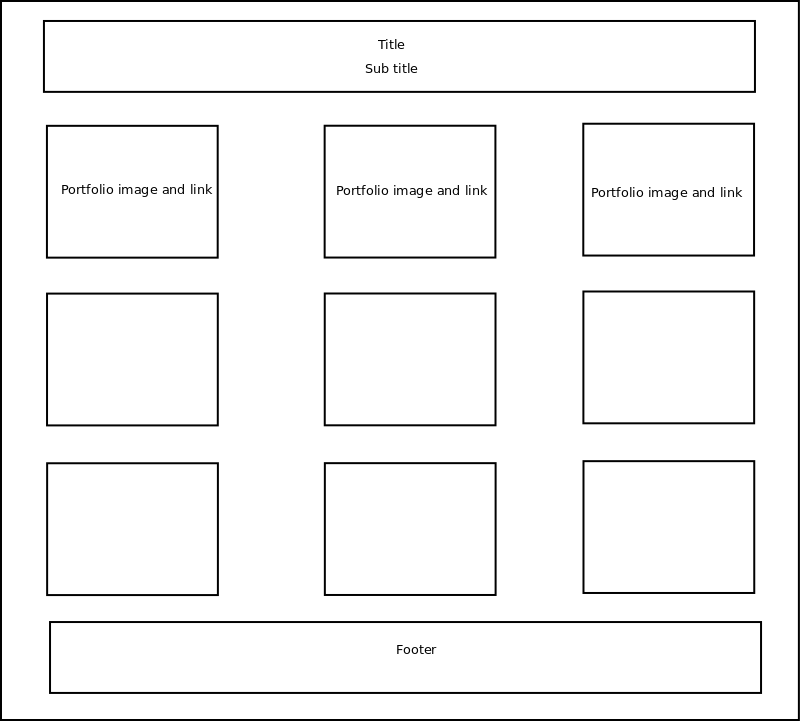
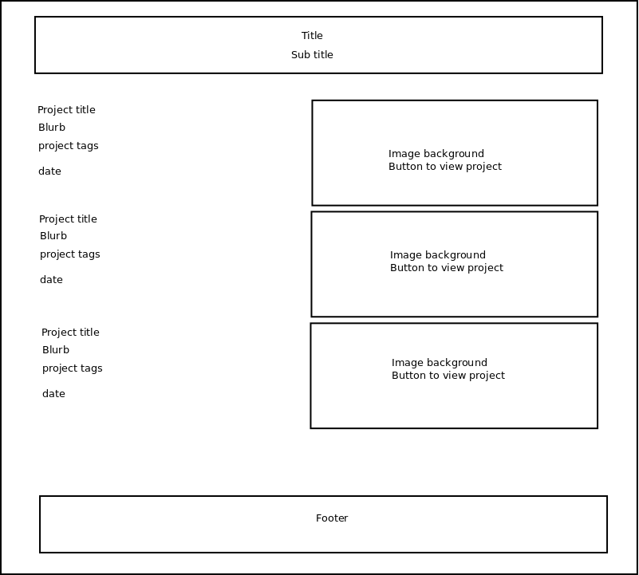

Making of Portfolio website
Letting the work speak for itself
I wanted to make a portfolio website to showcase all my work. This was a dauting task at first for me because I had never built a website before and I was not sure what I should put in website. Soon, a thought occured to me — why not approach the portfolio website design as a UX problem?
Attacking it as a UX problem
Upon inspecting it as a UX problem, I realized that I first needed to define a success criteria (goal) for my portfolio. In turn that led me to ask — Who is the target audience?
I kept the target audience was prospective employers. I then asked myself — what would prospective employers like to see in my portfolio?
Research
It would have been awesome if I could directly ask the prospective employers what they expected out of a portfolio. Since, that was not possible, I did a bunch of research of my own:
- Talked to seniors at my university and visited their portfolio websites. e.g. joyce sakata and siddharth soni
- Looked at portfolios of UX designers employed already e.g. simonpan.com
- Read various internet articles on building a portfolio. e.g. usabilitycounts.com article - how to make a UX portfolio
Goals
Based on above research I set the following design goals.
- Let work speak for itself
- I didn't want this website to be the primary source of interest for the reader. I wanted reader to be more focused on my project work
- Help reader assess project quality quickly
- I was aware that readers have to read hundreds of portfolios and are short on time. Hence, I wanted the content to be structured such that one is able to quickly scan it and assess quality of project quickly
- Reader should feel they are being guided through one portion of website to another
- Since I won't be present to walk through the portfolio the reader, the website should be able to guide reader through the portfolio
- Allow reader to read on any device type
- This meant the website need to be responsive at-least and being adaptive to device type would be a very nice thing to have
Brainstorming and design decisions
- No flashy website. Keep it simple. Less is more.
- To meet the criteria of letting the project work speak for itself and to not let this portfolio website come in the way of my projects, I decided to keep my portfolio website simple.
- Home page information architecture
- Above design goals led me to research and think deeply about the Information Architecture (IA) of this website. I sketched quickly various alternatives for the home page IA, evaluated pros-cons and picked one alternative.
|  |
|
 |
|
|  |
|
- Project work page information architectures
- I also evaluated alternative IAs for my project work pages.
Development challenge
The 1st version of my website used a wordpress theme. However, after adding a couple of my portfolio projects to my website using that theme I wanted to change the layout of the project work pages a bit. All of a sudden, I was faced with the task of understanding and changing a code base that I didn't understand. The wordpress theme did not use SCSS and hence even simple things like changing the font-size proportionally for various text elements like P, H1, H2 etc. took a lot of time! Because the wordpress theme was not documented changing the layout of the pages was also not a comfortable experience.
I then tried using Wix. I was initially satisfied with Wix. I really like that the fact that I completely control the layout of the website. Sadly, it was too good to be true. I soon found out that Wix websites are not mobile-friendly or responsive by default. Wix does give us a mobile viewer, however, that is severely lacking in features and there is no easy way to check if the website will look good for different device types.
In fact, chrome 'developer tools' has way better support for testing responsiveness and adaptiveness of your website than Wix!
- Concept
- 1st version process oriented text heavy. 2nd was visually attractive
- process oriented and text heavy. 2nd was visually attractive.